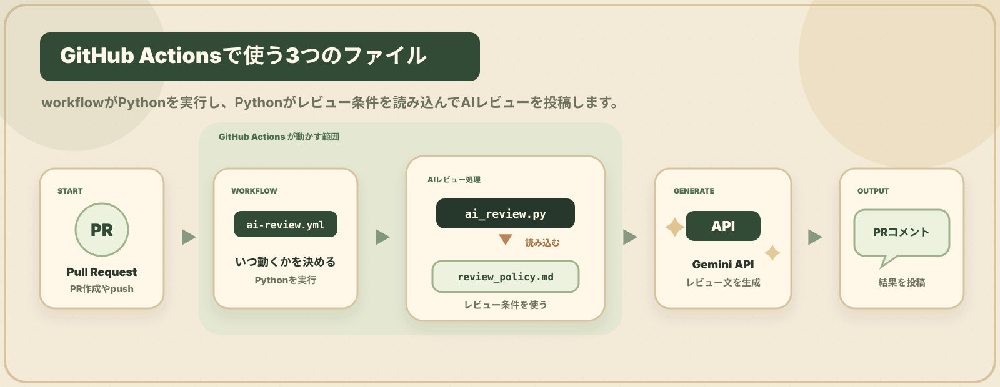

STEP 3
GitHub Actionsについて知る
Pull Request や push をきっかけに、自動で処理を動かす仕組みを確認します。ここでは、あとで作る Workflow・Python・レビュー条件ファイルがどうつながるのかを見ていきます。
GitHub Actionsについて知る
Pull Request や push をきっかけに、自動で処理を動かす仕組みを確認します。ここでは、あとで作る Workflow・Python・レビュー条件ファイルがどうつながるのかを見ていきます。

.github/workflows/ai-review.ymlあとで作るGitHub Actionsの手順書。
scripts/ai_review.pyあとで作るAIレビュー処理本体。
review_rules/review_policy.mdあとで作るレビュー観点を決める条件ファイル。
repo/
├─ .github/workflows/ai-review.yml
├─ scripts/ai_review.py
├─ review_rules/review_policy.md
└─ src/